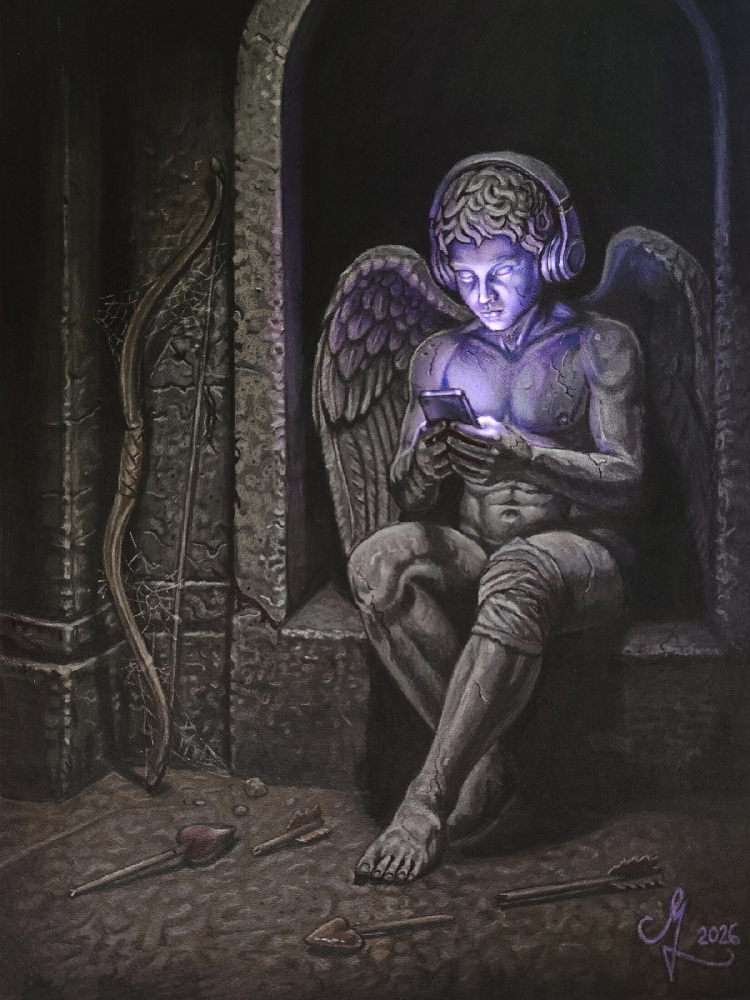
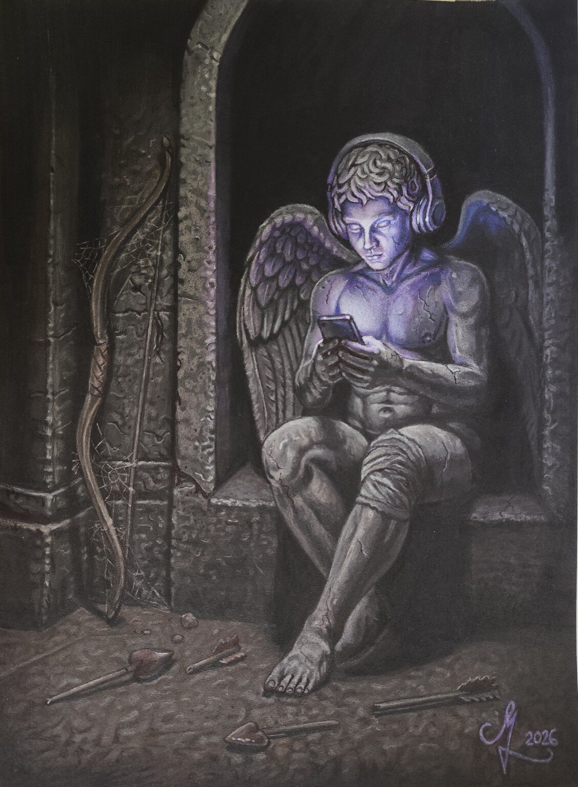
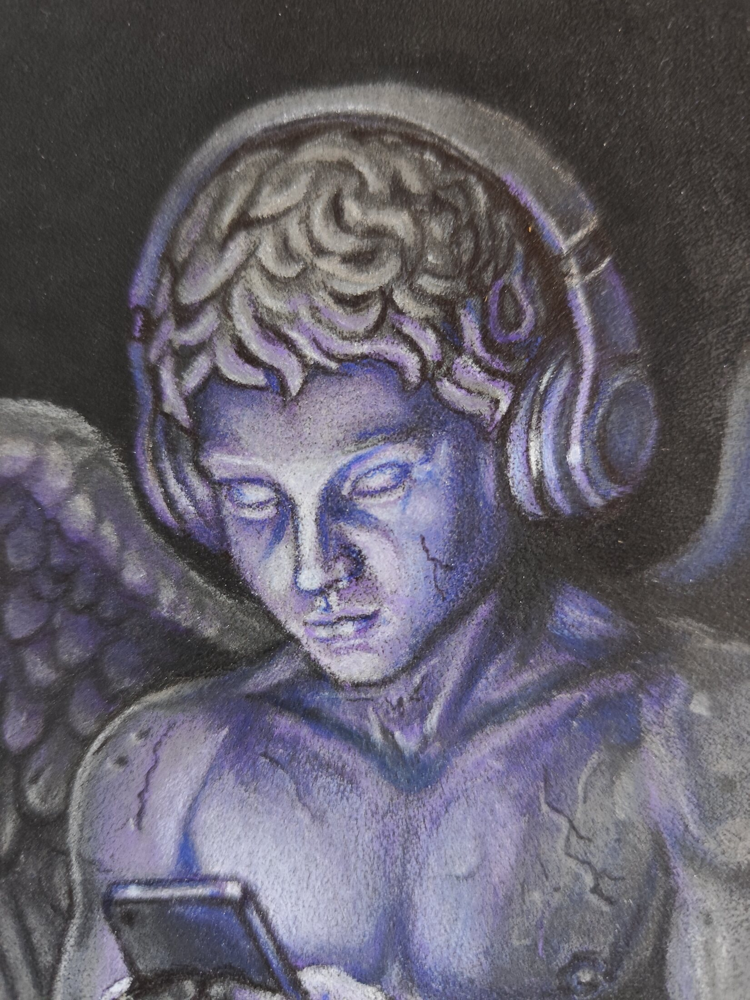
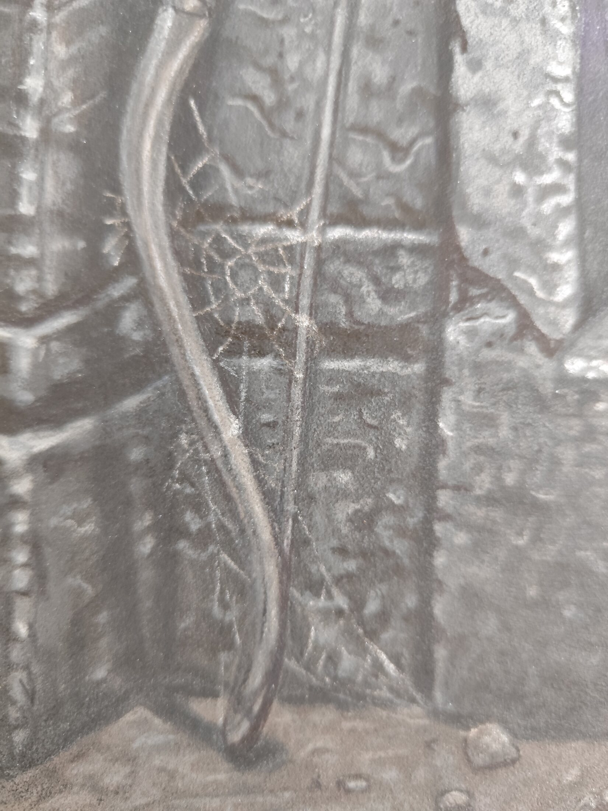
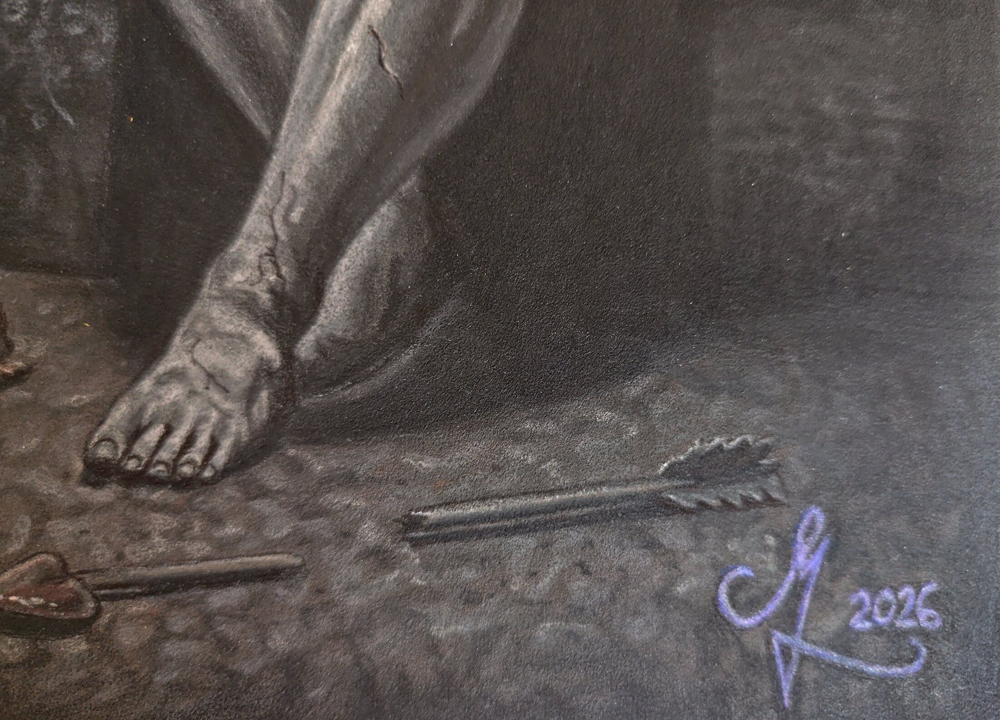
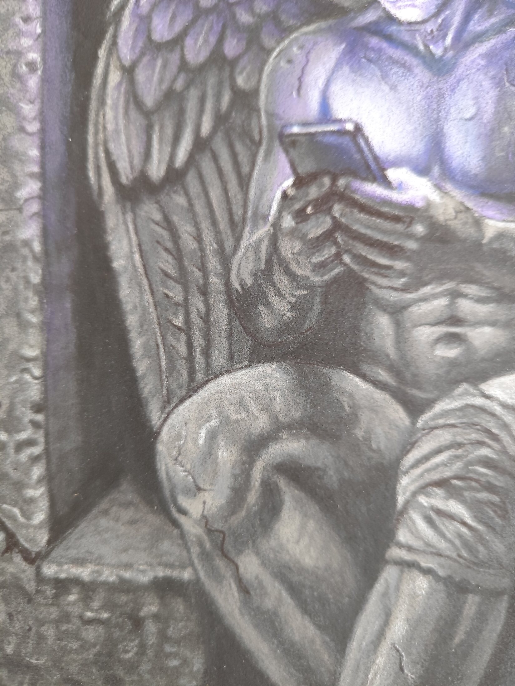
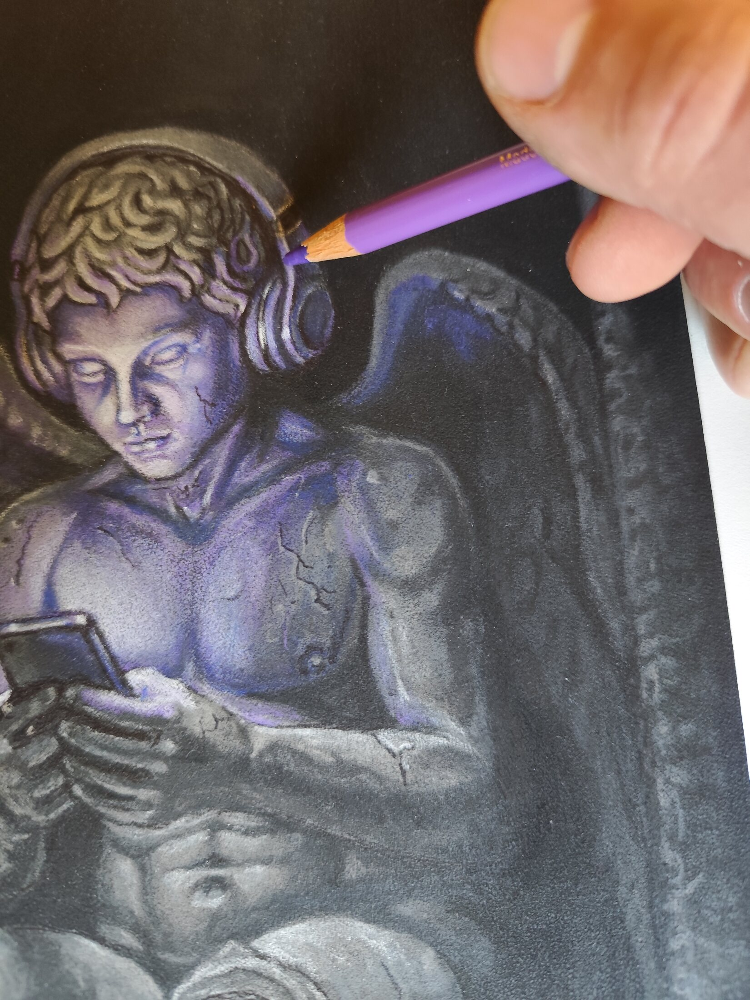

Cupido Online
“Sometimes we do not lose our purpose at once. We simply stop reaching for the bow.”
Story
A neglected Cupid sits absorbed in a phone while his bow gathers dust and broken arrows lie at his feet. The work can be read as a contemporary allegory about attention, intimacy and digital escape. Its quieter layer is personal: a reflection on abandoning passive escape and choosing creation instead.
The broken arrow and wounded knee also conceal a Skyrim reference—a reward for viewers who notice it, not a prerequisite for understanding the work.
Történet
Egy elhanyagolt Cupido a telefonjába merül, miközben íja porosodik, törött nyilai pedig a földön hevernek. A kép a figyelemről, intimitásról és digitális menekülésről szóló kortárs allegória, személyesebb rétegében pedig a passzív menekülés feladásáról és az alkotás választásáról.
Before digital light / Final

Details





Materials
2026 · Mixed media and digital illumination